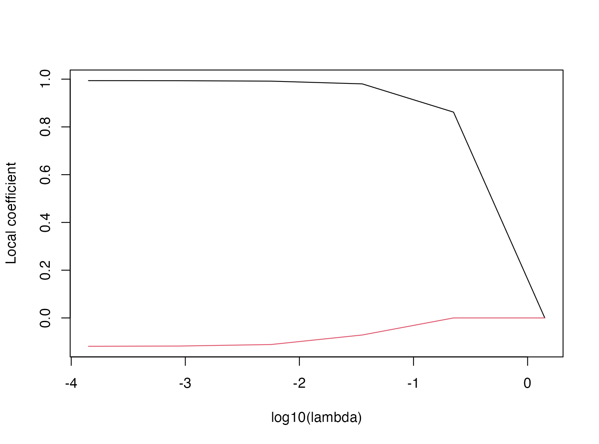
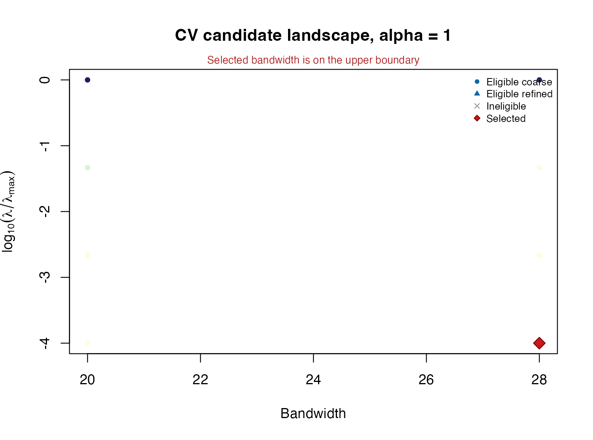
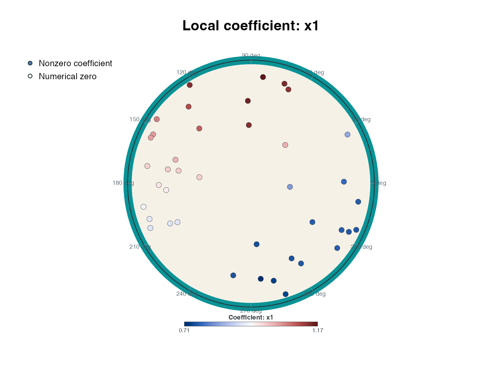
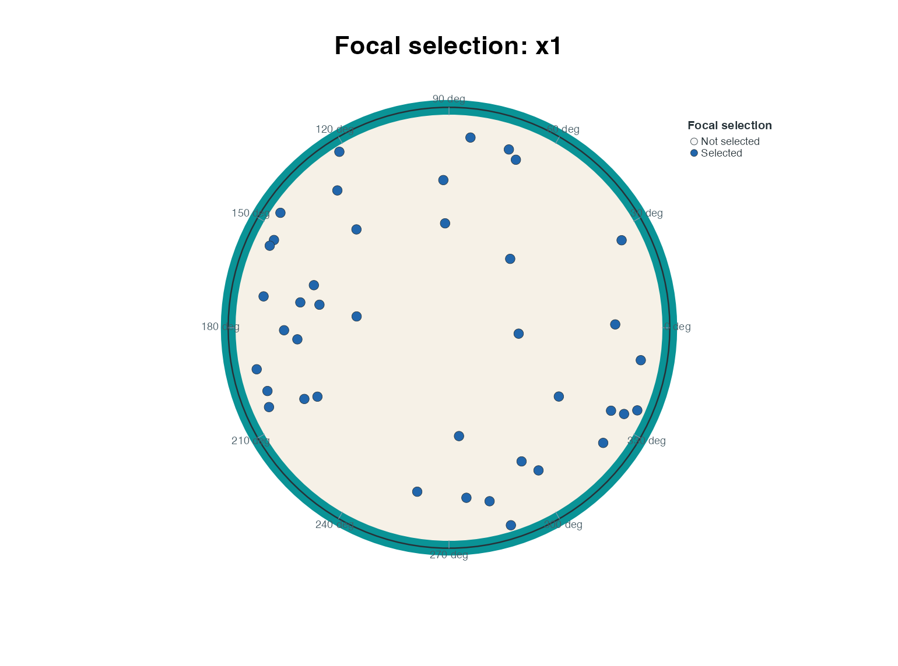

Joint Tuning and Focal Selection with LHWPR-Lasso
Bahadır Yüzbaşı and Zühal Küçükarslan Yüzbaşı
Source:vignettes/lhwpr-lasso.Rmd
lhwpr-lasso.RmdLHWPR fits a penalized regression at every focal location. The bandwidth and absolute penalty level are common to the fitted surface, whereas coefficients and active sets remain focal. Consequently, a predictor may be selected in one region of the Lorentz representation and set exactly to zero elsewhere.
LHWR is the original unpenalized regression foundation; LHWPR-Lasso adds a penalized objective and joint tuning. This tutorial concerns Lasso, not a claim that unpenalized Gaussian theory also covers every software extension. Start with An Introduction to LHWL for coordinates, basic LHWR, diagnostics and prediction. Cite the software using Yüzbaşı and Küçükarslan Yüzbaşı (2026); the separate Lasso manuscript reference will be added when its public record is available.
What the penalty changes
At focal location z_i, Gaussian LHWPR-Lasso minimizes the objective in Equation (1):
\frac12\sum_{j=1}^{n}\widetilde w_{ij} \big(y_j-b_0-\boldsymbol x_j^{*\top}\boldsymbol b\big)^2 +\lambda\sum_{q=1}^{p}v_q|b_q|. \tag{1}
In Equation (1), j indexes observations, q indexes non-intercept predictors, and i identifies the focal fit. The response is y_j; \boldsymbol x_j^* is the globally prepared p-column predictor vector, and (b_0,\boldsymbol b) are the local intercept and slopes on that design scale. Nonnegative case weights multiply the kernel weights and are normalized to sum to one at the focus, giving \widetilde w_{ij}. The penalty level is \lambda\geq0, and v_q\geq0 is the predictor’s penalty factor (default one).
The intercept is not penalized. A zero penalty factor forces a
predictor to be unpenalized; it is not a claim that its fitted
coefficient must be nonzero. The package centres and scales predictors
once for the supplied sample when standardize = TRUE and
returns coefficients on the supplied predictor scale. It does not
standardize each neighbourhood separately.
Equation (1) explains how Lasso can set local slopes to zero. The same absolute lambda is used at every focus for a given path, but weights and responses differ across neighbourhoods. Thus selection is focal, rather than one global variable list. This objective is for the Gaussian Lasso case; binomial fitting replaces squared loss with Bernoulli negative log-likelihood.
A small reproducible fit
set.seed(20260906)
n <- 40
H <- simulate_H2(n, r_max = 1.8)
x1 <- rnorm(n)
x2 <- rnorm(n)
dat <- data.frame(
y = 0.5 + (1 + 0.4 * sin(H$theta)) * x1 + rnorm(n, sd = 0.4),
x1 = x1,
x2 = x2
)Fit and read a regularization path
The following path uses the same synthetic sample, with bandwidth 28 and six decreasing lambda values. It is deliberately small and retains all coefficients so that path extraction and plotting can be demonstrated.
path_fit <- lhwpr(
y ~ x1 + x2, data = dat, Z = H$Z, bw = 28,
penalty = "lasso", alpha = 1, nlambda = 6, keep_path = "all"
)
path_fit
#> LHWPR fit
#> Family: gaussian
#> Penalty: lasso
#> Alpha: 1
#> Bandwidth: 28
#> Lambda: 0.000141521
#> Converged: 40/40 focal fits
knitr::kable(data.frame(
lambda = path_fit$lambda,
all_foci_converged = apply(path_fit$converged, 2, function(x) all(x != 0)),
max_kkt = apply(path_fit$kkt, 2, max)
), digits = 6, caption = "Numerical diagnostics along the small Lasso path.")| lambda | all_foci_converged | max_kkt |
|---|---|---|
| 1.415209 | TRUE | 0 |
| 0.224296 | TRUE | 0 |
| 0.035548 | TRUE | 0 |
| 0.005634 | TRUE | 0 |
| 0.000893 | TRUE | 0 |
| 0.000142 | TRUE | 0 |
plot(path_fit, focus = 1)
Coefficient paths at the first focal location. Other locations can have different paths under the same absolute lambda grid.
This is a single-focus path, not an average coefficient curve. A small coefficient may reflect shrinkage or weak local information. The path by itself does not select a tuning parameter.
s_example <- path_fit$lambda[3]
knitr::kable(head(coef(path_fit, s = s_example), 5), digits = 3,
caption = "First five focal coefficient vectors at a stored lambda.")| Intercept | x1 | x2 |
|---|---|---|
| 0.488 | 0.980 | -0.071 |
| 0.491 | 0.736 | -0.028 |
| 0.525 | 0.719 | -0.036 |
| 0.511 | 1.127 | -0.087 |
| 0.385 | 1.090 | -0.144 |
head(predict(path_fit, s = s_example))
#> [1] -0.4167582 0.7223719 0.7924138 0.4247644 -0.7497139 3.0647307Unlike interfaces that interpolate between arbitrary penalty values,
the LHWPR s argument accepts a single value represented in
the stored path (subject to numerical matching tolerance). Use an entry
of fit$lambda. Without s, extractors use the
fit’s stored selected index; a plain lhwpr() path is not a
cross-validation-selected model.
Joint bandwidth and lambda selection
The same folds are used for every candidate. Candidate rows are
selectable only when all relevant fits converge and their maximum
recorded KKT violation does not exceed eligibility_kkt_tol.
For cross-validation, both the validation fits and the full-data path
fit must pass this gate.
In this small synthetic example, the locations are generated directly
and held fixed. The default two-fold assignment alternates along the row
order; it is deterministic, not a random shuffle. Use an explicit
fold_id for frozen random folds or a justified blocked
allocation. The supplied geometry and predictor standardization are
fixed during this tuning calculation.
tuned <- tune.lhwpr(
y ~ x1 + x2,
data = dat,
Z = H$Z,
bw_grid = c(20, 28),
nlambda = 4,
nfolds = 2,
criterion = "cv",
rule = "min",
refine = FALSE,
compare_lhwr = FALSE
)
knitr::kable(
data.frame(
Check = names(tuned$refit_diagnostics),
Value = vapply(tuned$refit_diagnostics, function(x)
paste(format(x, digits = 6), collapse = ", "), character(1))
),
row.names = FALSE,
caption = "Exact-prefix selected-refit certificate."
)| Check | Value |
|---|---|
| path_length | 4 |
| selected_index | 4 |
| selected_lambda | 0.000176375 |
| convergence_rate | 1 |
| kkt_max | 3.94324e-08 |
| kkt_limit | 5e-07 |
| passed | TRUE |
The final fit is not restarted at a single isolated penalty. It reuses the exact decreasing lambda prefix from the selected tuning configuration, which preserves the numerical continuation path and ends at the exact selected value.
tuned
#> LHWPR joint tuning
#> Resampling: kfold
#> Criterion: CV
#> Rule: min
#> Bandwidth: 28
#> Alpha: 1
#> Lambda: 0.000176375
#> Score: 0.181101
#> Eligible: 8/8 candidate rows
#> Refit: exact path prefix (4 levels), KKT certificate passed
#> Boundary: selected bandwidth is on the search boundary
summary(tuned$fit)
#> Summary of LHWPR fit
#> Family / penalty: gaussian / lasso
#> Observations: 40
#> Predictors: 2
#> Bandwidth: 28
#> Selected lambda: 0.000176375
#> Converged fits: 40/40
#> Maximum KKT error: 3.943e-08
#> Active coefficients (min/median/max): 2 / 2 / 2Selection rules and folds
rule = "min" minimizes the chosen eligible score. The
one-standard-error rules are available for criterion = "cv"
only: they admit eligible candidates within the minimum-score
candidate’s estimated standard error. Within that set,
"1se" prioritizes larger relative penalty levels, whereas
"sparse_1se" prioritizes smaller fitted surface size.
Remaining ties follow the deterministic ordering documented in
?tune.lhwpr. These joint-grid rules should not be read as
simply choosing the largest absolute lambda across all bandwidths.
To use a frozen random allocation, construct and save it explicitly. This allocation is an alternative illustration; the evaluated example above keeps its original deterministic two-fold protocol.
set.seed(20260910)
random_fold_id <- sample(rep(seq_len(2), length.out = n))
table(random_fold_id)
#> random_fold_id
#> 1 2
#> 20 20
# Alternative protocol, not a second run in this vignette:
tuned_random <- tune.lhwpr(
y ~ x1 + x2, data = dat, Z = H$Z,
bw_grid = c(20, 28), nlambda = 4,
fold_id = random_fold_id, criterion = "cv",
rule = "min", refine = FALSE, compare_lhwr = FALSE
)For clustered, longitudinal or network-dependent observations, random
folds may not answer the scientific prediction question. Supply a
justified fold_id and resampling = "blocked"
when block validation is intended. compare_lhwr = TRUE
requests an unpenalized reference using the same folds and bandwidths;
it does not guarantee which method will win.
Inspecting tuning and focal selection
The landscape plots only evaluated candidates. Grey crosses are rows excluded by convergence, KKT, or criterion-specific validity gates; there is no visual interpolation across unevaluated tuning pairs.
plot(tuned, type = "landscape")
The exact evaluated bandwidth-lambda grid. The display does not interpolate scores at unevaluated combinations.
Coefficient and selection surfaces answer different questions. The coefficient view colors nonzero fitted slopes and draws numerical zeros as hollow points. The selection view reports whether the penalized coefficient is active at each focus.
plot_lhwpr_surface(tuned$fit, "x1", type = "coefficient")
Local penalized x1 coefficients at the selected configuration. The colour represents coefficient value.
plot_lhwpr_surface(tuned$fit, "x1", type = "selection")
Focal activation of x1 under the selected Lasso fit. Activation is distinct from statistical significance.
These plots are penalized-estimation summaries, not post-selection inference. In particular, an active coefficient is not automatically statistically significant, and a zero coefficient is not evidence for a point null without an additional inferential procedure.
Predictions and calibration
After tuning, use tuned$fit with the usual extractors.
Here we inspect calibration values, which use the observations that
supplied the fitted model; no out-of-sample claim follows.
knitr::kable(head(data.frame(
observed = dat$y, fitted = fitted(tuned$fit),
residual = residuals(tuned$fit)
), 5), digits = 3, caption = "Selected-model calibration output.")| observed | fitted | residual |
|---|---|---|
| -0.078 | -0.422 | 0.344 |
| 0.397 | 0.757 | -0.360 |
| 0.829 | 0.840 | -0.011 |
| 0.399 | 0.439 | -0.040 |
| -0.972 | -0.773 | -0.199 |
New-location prediction additionally requires newdata
and Znew. Predictor preprocessing stored in the fitted
model is reused automatically; the user must supply coordinates built in
the training representation. For Gaussian Lasso, this estimates
penalized local models around the new locations. For nonconvex
penalties, new-location fitting is a separate stationary-solution
calculation and should not be assumed to reproduce a particular
warm-start path branch.
Other supported penalties and response families
The following table describes existing software options, not the publication status or theoretical guarantees of future extension papers.
| Method | Setting | Qualification |
|---|---|---|
| Ridge | alpha = 0 (penalty ignored) | Shrinkage without Lasso sparsity |
| Lasso | penalty = ‘lasso’, alpha = 1 | Convex sparse objective |
| Elastic net | penalty = ‘lasso’, 0 < alpha < 1 | Convex mixture of L1 and L2 penalties |
| MCP | penalty = ‘mcp’, alpha = 1 | Nonconvex; stationarity is not global optimality |
| SCAD | penalty = ‘scad’, alpha = 1 | Nonconvex; stationarity is not global optimality |
alpha_grid allows joint tuning of elastic-net mixing
values. gamma_grid controls the MCP or SCAD concavity
parameter; it is not the Gaussian EBIC model-space parameter
ebic_gamma. Group penalties are not implemented.
family = "binomial" supports binary responses with logistic
local fits and validation loss; Gaussian information criteria and
unpenalized t-tests must not be attached to those results.
Numerical safeguards and memory
Inspect tuned$selection_table for eligibility and
exclusion reasons, and tuned$refit_diagnostics for the
selected refit certificate. Convergence plus a small KKT violation
supports numerical validity for the specified problem; it does not
establish unbiasedness, consistency or valid post-selection inference.
For MCP and SCAD, a stationarity check does not certify the globally
best solution.
When keep_path = "auto", the package retains the full
coefficient cube only up to ten million values.
keep_path = "all" explicitly overrides that guard; it is
appropriate for this 40-observation example, not a default
recommendation for large studies. Selected coefficients and fitted-value
paths remain available when the full coefficient path is omitted. Use
lhwpr_control() for documented solver and thread controls;
do not loosen numerical tolerances merely to obtain a preferred
result.
Limits of the tuning score
Built-in tuning compares candidates conditional on the supplied representation and globally prepared design; it does not refit the representation or its tangent reference within each fold. To evaluate a learned feature or network pipeline, use an outer split, learn transformations and representations on the outer training sample, tune there, and score only on held-out observations. Neither the minimum tuning loss nor an active-set plot substitutes for this evaluation. The same observations and preprocessing protocol should be used across competing methods.
Reproducibility and references
This tutorial evaluates only two bandwidths and four lambda values in its tuning example. These sizes make package documentation fast to rebuild; they are not a validated design grid for a production study. Preserve the data-generation seed, fold allocation, grids, eligibility threshold and package version when reproducing it.
packageVersion("LHWL")
#> [1] '0.3.1'LHWR remains the original methodological foundation. The Lasso extension requires its own citation once available; later SCAD or elastic-net publications will be linked to their corresponding software functionality. There are no invented identifiers or implied unpublished guarantees in the current reference list.